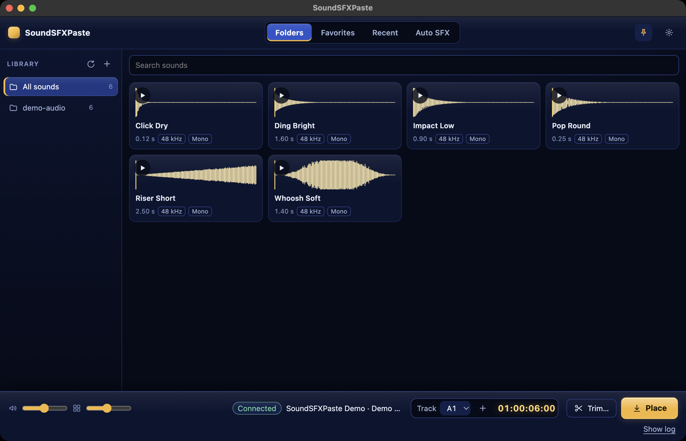

DaVinci Resolve panel · macOS · free
Find the sound. Hear it. Drop it on the timeline.
A sound-effects panel that sits next to Resolve: a real waveform on every sound, quick audition, placement at the cursor on the track you choose, without leaving the edit.
Version 0.2.0 · signed and notarized package · double-click to install

The flow
- Pick a folderAdd your sound folder; the panel lists every sound with its waveform and length.
- AuditionHover or press ▶ for a quick listen; favorites and recents are one click away.
- PlaceChoose the track, see the cursor position, press Place. Overlaps are stopped before anything is written.
What it does
Real waveformsComputed from the file, not decorative.
Visible destinationTrack and cursor timecode sit next to the Place button.
Overlap protectionThe plan is checked first and the result verified after writing, with rollback.
Keep on topThe panel can stay above Resolve while you work.
Auto SFXFill markers, replace clips, manage markers.
RO / EN / ESInterface and documentation in three languages.
Install and requirements
- DaVinci Resolve Studio 21 or later, macOS.
- Python 3 (the panel checks it and shows the install steps).
- In Resolve: Preferences → General → External scripting using: Local.
- Double-click the package, then Workspace → Workflow Integrations → SoundSFXPaste.
Known limits
- Drop-frame timelines are refused explicitly.
- Resolve has no API to set a clip selection; Replace uses your manual selection.
- Dragging a sound straight onto the timeline is not available; placement uses the button.